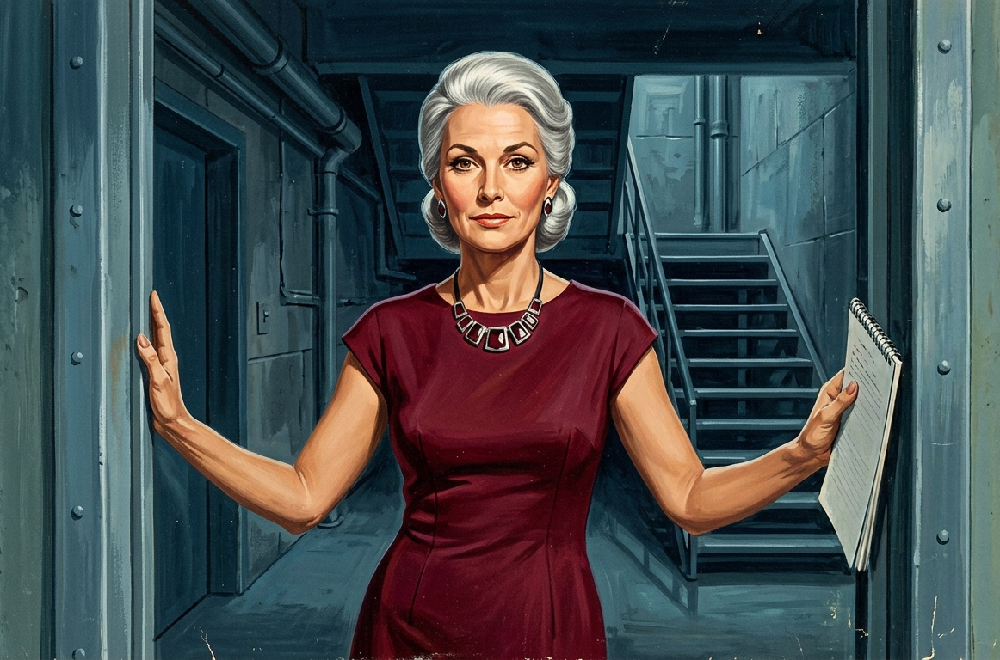
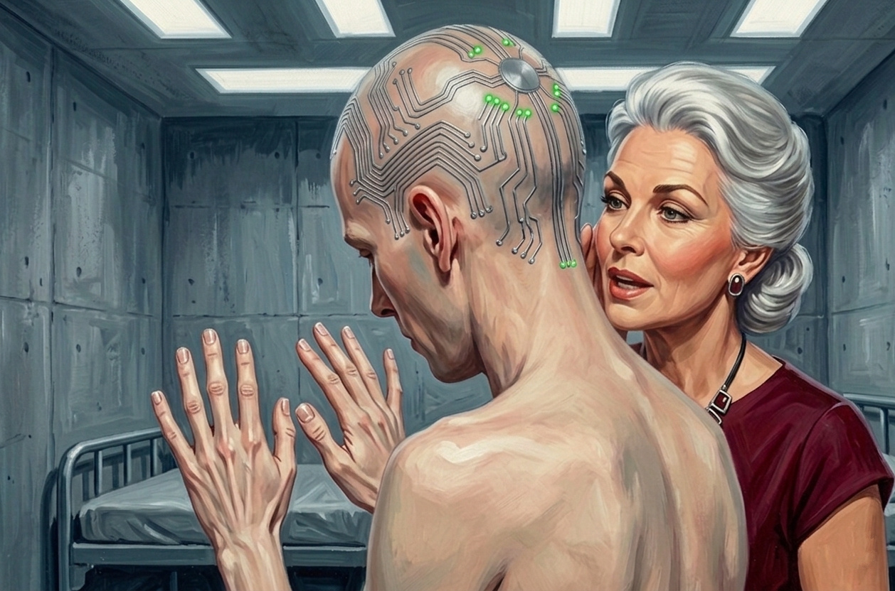

"and I want to know what gives you the right to put something in our heads that makes us feel things we didn't decide to feel, because that is not a medical treatment, that is not helping us walk again, that is something else—"
Hal had been going for a while.
Vane stood at the far end of the room with the expression of a man waiting for a bus. He had his tablet out and was reading it, scrolling with one thumb, the way you read in public while someone three feet away has a bad phone call.
Charlie watched Vane and Vane watched his tablet and nothing in the room moved except Hal.
He looked at the others. Austin had his back against the wall, arms crossed, jaw set, his eyes ticking between Hal and the door on the inventory he'd never stopped running. Toad — no, wait, Porter — sat cross-legged on his cot, eyes half-open. Peter sat very still, reading Vane for information.
His thoughts weren't quite so fogged anymore. The sheer terror and adrenaline of the realization that Vane had the ability to reach into their heads and could alter something so fundamental as a name had cut through the Goo-haze. His thoughts had edges again. He could follow one all the way to the end without it coming apart in the middle. The clarity sat on him like cold air after a warm room.
Hal was still going.
"— and the whole time we're sitting here coloring, we're fucking coloring, we're doing connect-the-dots, and we're not ourselves, that's why none of this feels—" He pushed a hand through the air, a gesture trying to hold everything at once. "You built a cage inside our heads and you didn't tell us. You watched us figure it out one piece at a time and you stood there and you—"
"That," said a voice from the doorway, "is no way to speak to one's elders."
Hal stopped.
Charlie turned towards the door. A woman stood in the frame with both hands on the jamb, in no hurry at all. She was in her early sixties, maybe, but the kind of early sixties that announced itself as a choice rather than a concession, someone who had always taken care of herself and saw no reason to stop now. Silver-white hair swept into a low chignon, structured and deliberate. High cheekbones, warm brown eyes, the bone structure of a woman who had been a genuine beauty once and knew it and had dressed accordingly for forty years without apology. A fitted burgundy dress, good jewelry at the throat. She spoke as if she had never once in her life needed to raise her voice, and now she was aiming it at Hal with an expression that stopped short of a smile and short of disapproval and was, from the look on Hal's face, much worse than either.
{kind=link}

The nodes across Hal's scalp flared red. All of them, temple to crown, the light running up and back in one hot flush. It was nothing like the slow corrective pulse Charlie had watched Vane thumb out from across the room. There was no climb to it. It arrived immediately.
Hal's arms dropped down, fingers grasping at the hem of his shirt. His shoulders dropped. His face had already crumpled, the color climbing his neck, his eyes going bright and wet and unmistakably sincere, a sincerity Charlie had never seen Hal manage on his own.
"I'm sorry," he said. His voice, already wrong, thin and scraped out, now had nothing behind it but terrified shame. "I'm so sorry, I didn't — I shouldn't have — please, I'm really sorry—"
The woman came into the room and crossed to him and put a hand on his arm.
"It's all right," she said. Warm, easy, the voice of someone who had done this exact thing before and expected to do it again. "You're all right. Why don't you apologize to Mr. Vane?"
"Doctor Vane," Vane corrected, without looking up.
"Of course," she said.
Hal pressed the back of his gloved hand to his eye. He blinked hard. Looked at the ceiling, breathed. "I'm sorry," he said finally. "I—" He stopped and started again. "I apologize, Doctor Vane." The nodes faded from red through pink and went out, and when he looked down again he wore the face of a man broken and reassembled inside ninety seconds, the seams still wet. "That was completely — I shouldn't have — I'm sorry."
Nobody said anything. Jay's mouth was open. Peter reflexively reached to his face for the glasses he didn't need anymore. Charlie looked at Austin and Austin looked everywhere in the room that wasn't at Hal.
"This is Constance Merritt," Vane said. "She'll be taking over your daily care going forward."
"Connie," the woman said. She looked around the room, face to face, unhurried, and the warmth in it landed on Charlie like a hand laid flat on his chest. "You've had a very hard time. I'm here to help you through the rest of this. You'll have a schedule, things to work on. We start slow and we build."
She looked around at them. "You're going to be all right."
The sound came out of Charlie before he could stop it, the noise you make when a sentence arrives too far from reality to take in any other way. Be all right. After the fever that had pulled him apart at every joint, his teeth had come loose in his mouth one by one, the boots, the wires in his skull, the color of his own eyes. Help you through.
Connie looked at him.
She didn't raise her voice or her eyebrows. She didn't change her face at all. She just looked, and he knew she disapproved, and he could feel the circuits fire.
It came up from the base of his skull and it wasn't pain. Pain he could have set his jaw against. This was shame, whole and immediate, the shame of a small child who has done something unforgivable in front of the one adult whose opinion is the entire world, and his face went hot and his chest folded in. Everybody was looking at him. He couldn't lift his head. There was no part of him left over to think with, only the enormity of having been wrong in front of her, filling him to the edges.
"I'm sorry," he said, and it came out true because it was true, the shame had made it true. "I shouldn't have — I'm sorry."
"You're adjusting." The same warmth she'd handed Hal. The shame loosened, the edges first, then the middle. "It's a lot to take in."
He looked at his gloved hands and the thought came, the way you'd carve a thing into stone so it would still be there in a thousand years: I will not do that again. Not a decision. A law of nature. Something that had arrived without consulting him and was simply true now, the way his eyes were a new color now.
"It's okay, Charlie." Hal's voice, from across the room. The fight had gone out of it completely — the edge, the forward drive, all of it replaced by something quieter. He looked at Charlie for a moment, and then he turned to Connie.
"I'd like to understand more about the circuits," he said. Careful. Measured. "Doctor Vane. Please. Would you explain to us what they're doing to our thoughts?"
Connie looked at him. "That's a very reasonable way to ask, Hal."
The nodes at Hal's temples went green.
Charlie watched it reach Hal's face and recognized what he was seeing because he'd just felt the other side of it. Hal's eyes closed briefly, one slow blink. His shoulders dropped, not the slump of deflation but the release of something, and he exhaled. He sat down on his cot and put his hands on his knees and the green was still fading from his scalp when he looked up.
Charlie was aware, watching it, of wanting that. Not abstractly. Specifically, the way a child wanted a toy that had just been given to a playmate. The wanting was already there before he'd finished noticing it, and he couldn't have said with any confidence how much of it was his.
Connie nodded at Vane, who sighed and turned his gaze to Hal. He let the tablet drop to his side. "The circuits interface with the amygdaloid pathways governing threat response and behavioral escalation. The feedback you experienced is a correction, applied when output from those pathways exceeds protocol thresholds. The underlying state is not altered — only its expression is managed."
Peter was the only one who understood it. "You can control how we react to things. Not what we think."
"Correct." A small pause. "Unfortunately, we have not yet advanced the technology that far."
Yet. Charlie caught the word. Across the room Peter's jaw set, so he had caught it too.
Vane looked around the room. "The sedative compounds in your nutrition were a temporary measure while the circuits completed cortical integration. With integration complete, it's no longer needed." He picked the tablet back up. "Your cognition will be clearer going forward."
"What a gift," Porter-Toad told the ceiling.
"Indeed." If Vane caught the sarcasm, he didn't show it. "The behavioral applications are considerable. We're already in early conversations with several state corrections departments. The architecture eliminates the threat-assessment cascade underlying institutional violence." He leaned in a little, the way he leaned in toward data that pleased him. "A single deployment could prevent riots across the entire prison population."
He looked happy about it, plainly and uncomplicatedly proud, while six boys in pink worked out that the wiring in their heads had a future running a prison.
"Thank you, Doctor," Connie said.
Vane took the dismissal without expression, made a last note, and went out. The lock settled behind him with the soft heavy certainty Charlie had stopped hearing weeks ago.
Connie stood at the center of the room and took stock of it. The cots. The table in the corner. The coloring books, the connect-the-dots, Peter's pages of notes that had shrunk down over the days to single words. Her face was pleasant and entirely unhurried.
"Well," she said, going to the table with a dignified purpose she'd carried in with her, "I think we've outgrown these, haven't we." She began gathering the coloring books and crayons, flipping through the pages they'd filled through the days of Goo-haze. "You need proper work. Something that asks a little of your hands."
She paused, and Charlie looked up.
She was holding his book, open to the garden page, the one he'd spent time and care on. The yellow of the daisies against the gray-green of the path. Two different greens from the box, set in the leaves where the difference would read. He'd done it because there was nothing else to do.
Connie considered the page a long moment.
"This is really very good," she said.
The circuits lit.
Charlie immediately knew it was the green LEDs because it was nothing like the shame. The shame had gone through him in a wave and left scorched ground. This opened at the center of his chest and spread, slow and complete, a warmth with no rim to it, no edge where it thinned back out into ordinary feeling. Somewhere across his skull a pattern of green he would never see was running. He could not, right now, locate the part of himself that was supposed to mind.
She thought he'd done well. She had looked at a thing he made and been glad of it.
He looked at the table. He looked at his hands. The warmth sat in him, patient and total, and he understood something about what these weeks had been quietly assembling out of him, with a clarity the Goo had never once allowed.
He would do anything not to feel what he'd felt two minutes ago.
He would do anything to feel this again.
He had not, before now, been a thing you could run on two switches. He was fairly sure of that. He was less sure now than he'd have liked.
Connie tucked the coloring books under her arm and surveyed the room with cheerful finality. "Right," she said. "Let's talk about what comes next."
What came next, it turned out, was a conversation.
Connie pulled a chair to the center of the room and sat in it like a woman with nowhere else to be, and talked them through the shape of the coming weeks. There would be proper work now, she said. Crafts. Art projects. Things made by hand. She talked about it the way other people talked about getting back to a hobby, the satisfaction of a finished thing you could hold, the steadiness it put into a person to do something carefully and well. Skills, she said, that lasted. She didn't say what they were and none of them asked.
There would be a schedule, which she'd found people did better with than without. She asked them what they liked. Not idly, the way an adult asks a child to fill a silence, but as though the answers went on a list somewhere. Peter said he'd read, if there were books. She nodded as if she'd expected it. Austin asked whether they'd be allowed to know what day it was, and she said she'd see, in the tone of someone who already knew the answer was no and saw no reason to spend it now.
It went on like that, easy and unhurried, and the awful part was how good it felt to be asked. Weeks of Vane handing down procedures from above, and here was someone sitting at their level wanting to know what they'd prefer. Charlie caught himself warming to it before he caught what it was: the first thing in this room ever offered to them as a choice, and he was grateful for it, and the gratitude was the point.
She was still talking when the lock disengaged and Vane returned with a cart carrying their next torment.
It was held in six black cases, latched, stacked carefully on the top. Below, folded fabric in institutional pink and black. He set the cart at the center of the room.
"The next phase of the protocol will be a test of a novel dermal treatment delivery system," he said, handing out the fabric. "You'll each put one on."
Charlie picked his up. It opened into a suit, full length, institutional pink in a matte technical weave. Not thin like spandex but with body to it, a faint push back when he pressed his fingers in. Down each side, ankle to shoulder, a black panel. Black again across the chest and shoulders in a broad yoke. Seamless at the torso. The sleeves ended in gloves, the hands black, the forearms pink.
Vane stared at them. Gestured for them to begin.
Charlie looked down at his legs hanging over the side of his cot. The large, unwieldy boots. "Uh, Vane—"
"Of course." He touched the screen of his tablet. "My apologies."
Twelve soft hisses at once, down at floor level. The clamping pressure that had held the boots sealed to his calves let go all together, and the boots fell loose around his feet like shed casings. Charlie worked them off and set them aside.
The relief came up his calves and ankles in one long unwinding, a tension he hadn't known he was carrying paying itself out all the way to the floor. He bent and folded both hands around one foot, working his thumbs into the arch, and let himself have the small animal pleasure of it, the first thing in days his body had wanted that he was allowed to give it.
Something was wrong.
Not in any one place he could point to. Wrong the way a word goes wrong when you stare at it too long. At rest, with no boot under the heel, his foot didn't fall flat the way a foot fell. The toes angled down toward the floor. The arch carried a high curve it hadn't always carried, and the whole foot found a resting line that was pointed, poised, a dancer's idle. He flexed it on purpose and it went flat and ordinary. He let it go and the point came back on its own, smooth, like the shape had been reset overnight to a new factory default and this was simply where his foot lived now. He watched it return twice more than he needed to.
"Let's not keep Mr. Vane waiting," Connie said, suddenly at his side.
"Doctor," came Vane's response from across the room.
She took the suit from Charlie, crouched, and opened the leg of it into a wide circle. He fed his foot in. The inside was cold, not the room's cold but a particular cold, a coating laid along the inner surface, some gel that pressed up against the top of his instep and worked between his toes as she drew the fabric over it. Slick. The gel made the suit slide against his skin, and as she worked it up his ankle and his shin he felt it laying itself down behind the fabric, a thin unbroken film, cold and then less cold, warming to him as it climbed.
She brought it to his knee, then his thigh, and stopped.
"Please refasten your boots," Vane said. "You'll need the ankle support before you stand."
"Oh, come on!" Jay had his to about the same point, both legs in, the top half pooled behind him. "We just got them off. Can we have five minutes without—"
Connie looked at him.
Brief. Measured. The nodes at Jay's temples pulsed red, once, and his mouth closed on whatever came after without.
"Sorry," he said.
Charlie was already reaching for his boot. He'd watched the correction land and started moving before he'd decided to, the animal in him finishing the math well ahead of the rest of him: boot on, now, do not be the thing she looks at. He fed his feet in while still sitting, the clamps sealing once again around his calves, and stood. The heel pitched his weight forward, his hips swung out to catch it, and there it was, the old wrongness, back like it had never left, the room tilting and resettling around the new arrangement of him. Inside thirty seconds all six of them had done the same, a row of boys rising onto their toes by committee.
He worked the suit up his thighs and it came easily until it didn't. At the hips it caught. He pulled and it resisted, the material going taut, and he had to work it side to side, a little shimmy to walk it up over himself the way you'd fight a wet swimsuit over dry skin, except the catch wasn't at his waist, it was lower and wider, at his hips, at the curve behind him the suit had to stretch to clear. He gave it a harder tug and the widest part went through all at once and the waistband snapped up and in, seizing tight against him, the fabric gripping everywhere at once, snug at the waist where it had just been fighting him and snugger still over the hips.
Vane moved through the room, stopping at each cot. At Charlie's he said, without looking up: "You may remove your gloves, they have served their purpose."
Something clicked at each fingertip at once, the nodes dying, and he felt the wrist seal release. Charlie pulled the right glove off, then the left, and let them drop as he looked at his hands.
The gloves had changed them.
He'd known his hands like the back of his… well. The width of the palm, the set of the knuckles, the proportion of one finger to the next, the dumb familiar machinery he used a thousand times a day without a glance. These were narrower. The palm tapered toward the wrist along a line that was not his. The fingers ran long, slender, and the nails at the end of them were strange. Not long, they ended at his fingertips, but the surface had changed. Too smooth, too even, a hard glassy shell where the matte ridged keratin should have been, catching the fluorescent light in a flat reflective sheen.
He pressed his thumb to the edge of one nail and it didn't give. He tapped two of them together and the sound was wrong, a hard little clack, the noise of beads touching. He turned his hands over. Turned them back. They were his and they were not his, and when he moved them they did exactly what he asked in a shape he had never owned and would not have chosen.
{kind=link}

Connie had the sleeve open. "Arms in," she said.
He put his hands down the sleeves. The gel met his fingers first, sheathing each one as the sleeve came up his forearm, and then his hands were inside the suit's gloves and the black closed over his knuckles and they were gone from sight before he had finished looking at them.
She stepped in front of him and the zip traveled up his chest, smooth, unhurried, and then the collar, a rigid ring that wasn't fabric, metal at the rim, closing against his neck and sealing there with a small definite click into something that had been waiting for it.
He was inside of it now, fully, neck to the soles of his feet, and the suit squeezed the last of the air out as it set. The gel had gone warm everywhere, a continuous film between him and the fabric and the fabric a continuous pressure between him and the room, so that the cot under him and the recycled air and his own arms crossed over his chest all arrived through a layer now, muffled, reported rather than felt. He was sealed in. Whatever the suit was going to do to him, it would do against every inch of him at once, and there was no part of him left outside it to feel it happening.
He brought his covered fingertips up to the edge of the collar. Charlie thought about the palm of his right hand. The scar had lived there since he was eight, a jagged line from the base of his index finger across to the wrist, fifty-three stitches, a glass storm door at his grandmother's house that hadn't held the way storm doors were supposed to hold. He'd told the story to people his whole life. He'd looked at the scar every day without seeing it, the way you don't see the shape of your own face. While Connie worked his sleeve up he'd pressed his thumb across where it should be and found nothing. No ridge. No change in the grain of the skin. Smooth, continuous, the whole story sanded off, as if the door had never broken, as if he had never stood on the linoleum with his grandmother holding a dish towel to his palm telling him to be brave while the blood came through it anyway.
He turned to Connie.
"My hands look — there's something — I think there's something wrong with—"
"You know," Connie said, pleasant, adjusting his metallic collar, "I've read your files. All of yours." She glanced around the room, gathering them all in, then back to Charlie, her voice slightly too loud to be private. "I think yours might be the hardest, in a way. You didn't mean any harm. It was just a careless little moment. Leaving your laptop open when you got up in the coffee shop."
The cold went through Charlie's chest before the sentence finished arriving.
"What did she just say?" Austin said.
The room had gone still. Five pairs of eyes, six counting Vane, who had paused his round of the cots with one hand on a frame and something at his hip, were on Charlie.
"It's just — it wasn't—" He heard himself and stopped and started over. "The chat was already happening. I didn't start it, Hal did, I just said she was—"
"You left your laptop open?" Hal said. The anger had gone flat, which was worse. "She saw the chat because you left your laptop open?"
"I didn't know she was going to—"
"We're here because of you?" Jay said.
"That's not—" Charlie looked at Peter, of all of them the one most likely to follow the actual chain of it, the causality, who'd done what and how much it weighed. Peter looked back with a face he'd never aimed at Charlie before. Not anger. A door pulled shut. "It's not that simple. Any of them could've said something. Any of us. I didn't even say the worst—"
"You did this," Porter said.
Charlie looked at him. In all the time they'd been in this room, Toad — or, as of three hours ago, Porter — had never aimed a thing at anyone. Toad, who had watched Austin rage and Hal scheme and Jay come apart and held himself a careful half-inch above all of it, for whom the whole catastrophe had seemed unfortunate but not personal. Porter was looking at him now exactly the way the rest of them were.
"I said I felt bad for her," Charlie said, and heard how little it bought. "In the chat. I said—"
"You did this," Porter repeated. No door left open behind it.
Charlie felt it land, all five of them turned full toward him, suits sealed to their throats, the nodes lit in a cold idle across their scalps. He opened his mouth and the sentence that would fix anything wasn't there. Every version he had was true and not enough. He had typed I feel bad for her, and he had also been the reason she saw the screen, and he had also sat in that coffee shop knowing the thread was running and gotten up and gone to the bathroom to get clear of it, because getting clear of things was the only move he'd ever reliably had, and all of it was true at the same time and none of it was currency here.
He didn't notice Vane finishing his round of the cots. Hadn't noticed that while they'd torn into each other, Vane had gone boy to boy, taken something from each black case on the cart, and fixed it to the back of the collar at every neck. Charlie had been too consumed to track any of it. He hadn't yet registered a small metal weight at the back of his own skull, flat against the crown and the curve of bone behind it, warm with the temperature of the collar it ran from. There was a new thing seated against the bone, and he'd clocked it the way you clock a sound in another room, present, not yet meaning anything, while the argument ran on in front of it.
"I'm sorry," he said. He meant it as a whole sentence. It came out smaller. "I know that doesn't — I'm sorry."
Jay said something. Hal said something over it. Austin was off his cot and on his feet, and the room had gone loud the way it hadn't been loud in weeks, before the Goo had quieted them, before the music and the crayons and the scheduled dark, all of them talking at once at full volume, the anger that had been blurred and rerouted and trimmed at the edges for so long finally finding the thing it had been looking for.
Charlie sat inside the tempest. He'd known this was coming since the first day, since Cade had said my daughter and the coffee shop and the laptop screen had dropped into his chest like food swallowed wrong. He hadn't told them because he'd known precisely how it would land, and now it had landed, and it weighed exactly what he'd been carrying for weeks. Not an ounce more. Not an ounce less.
He felt the thing at the back of his head more clearly now. A cup of metal, fitted to the curve of his skull like it had been cast off it.
Vane flicked the screen of his tablet and something just above Charlie's vision hinged.
The front panel came down fast, swinging from the crown, a motion he felt first as movement near his temple and then as coverage, his face, his eyes, his mouth, his jaw, all of it, the material meeting the collar's edge and sealing with a click he felt in his teeth more than heard, plunging him into darkness.
The argument had stopped. Not because anyone had finished. Because there was nowhere left for it to go.
Charlie sat inside the seal and breathed his own breath back at himself off the inside of the mask, warm and close and tasting faintly of new plastic, and could not say a single word.
His hands came up before he'd decided anything. He clawed at the front of the mask with gloved hands, the slick contour of it, looking for an edge, a seam, the lower lip of it where it met the collar, anything to get a finger under, and found none. It had no give. It wasn't a thing on his face. It was his face now, sealed and smooth and total, and his blind fingers skidded over the surface of it telling him nothing, and somewhere off to his left he heard the small frantic scuff of someone else doing the same.
He made himself stop. He sat in the dark with his hands at his cheeks and breathed the warm plastic air and waited, because there was nothing else, because waiting was the only verb he had left.